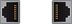
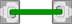
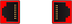
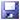

Voraussetzung: Um Control Unit Parameter und Antriebsparameter zu schreiben und zu aktivieren, ist mindestens Zugriffsstufe "Service" nötig.
Mit Softkey "Antriebe aktivieren" öffnen Sie in der "Übersicht Antriebszustand" eine Tabelle aller Antriebsobjekte, die den aktuellen Status des Parameters p0105: "Antriebsobjekte aktivieren/deaktivieren" anzeigt. Zusätzlich wird der Status der Verbindung als Symbol dargestellt:
DO-Status (p0105) | Symbol | Bedeutung |
|---|
[0] deaktiviert |  | Die Komponente ist nicht gesteckt und der Status ist deaktiviert. |
[0] deaktiviert |  | Die Komponente ist gesteckt und der Status ist deaktiviert |
[1] aktiviert |  | Die Komponente ist gesteckt und der Status ist aktiviert. |
[1] aktiviert |  | Die Komponente ist gesteckt und der Status ist aktiviert: Komponente mit Störung. |
[2] deaktiviert ohne Hardware | - ohne Symbol - | Die Komponente ist nicht gesteckt, der Status ist deaktiviert: Aber die Komponente ist in der Soll-Topologie enthalten. |
| Hinweis |
Status p0105 = [2] deaktiviert ohne HardwareIn der "Übersicht Antriebszustand" werden für ein Antriebsobjekt nur die beiden Zustände "[1] aktiviert" und "[0] deaktiviert" zur Auswahl angeboten. Ist ein Antriebsobjekt mit Status [2] deaktiviert ohne Hardware vorhanden, muss der Status auf "[0] deaktiviert" geändert werden und danach die Hardware-Komponente gesteckt und angeschlossen werden. |
Die Spalte "Datensicherung" zeigt folgende Symbole an:
|  | Die Sicherung der Antriebsparameter für jedes Antriebsobjekt ist gespeichert unter: /user/sinamics/smi/backup |
| | Aus einem Create MyConfig-Paket wurden Parameterdaten von Antriebsobjekten auf die CompactFlash Card der Steuerung kopiert. Falls beim späteren Anschließen des Motors mit DQI-Geber bei der automatischen Reglerdatenberechnung die Konfigurationsparameter überschrieben werden, werden diese Parameter beim Aktivieren erneut in das Antriebsobjekt geschrieben. |
⇒ Weitere Aktionen: Beispiel: Komponente nachträglich einbauen